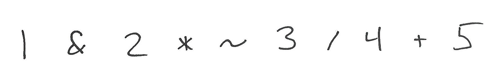
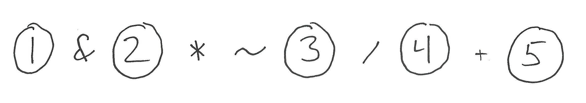
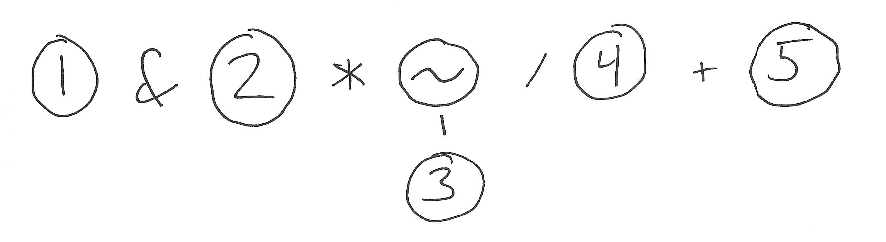
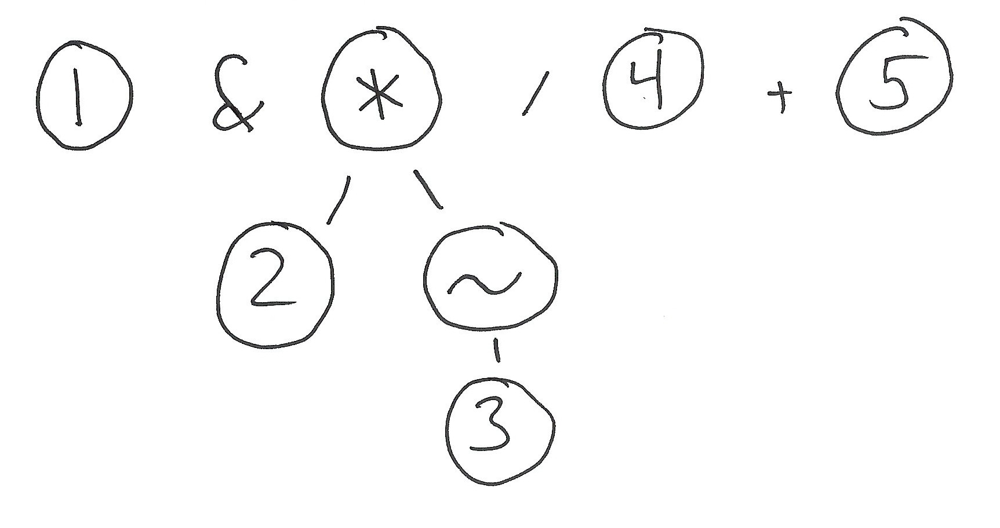
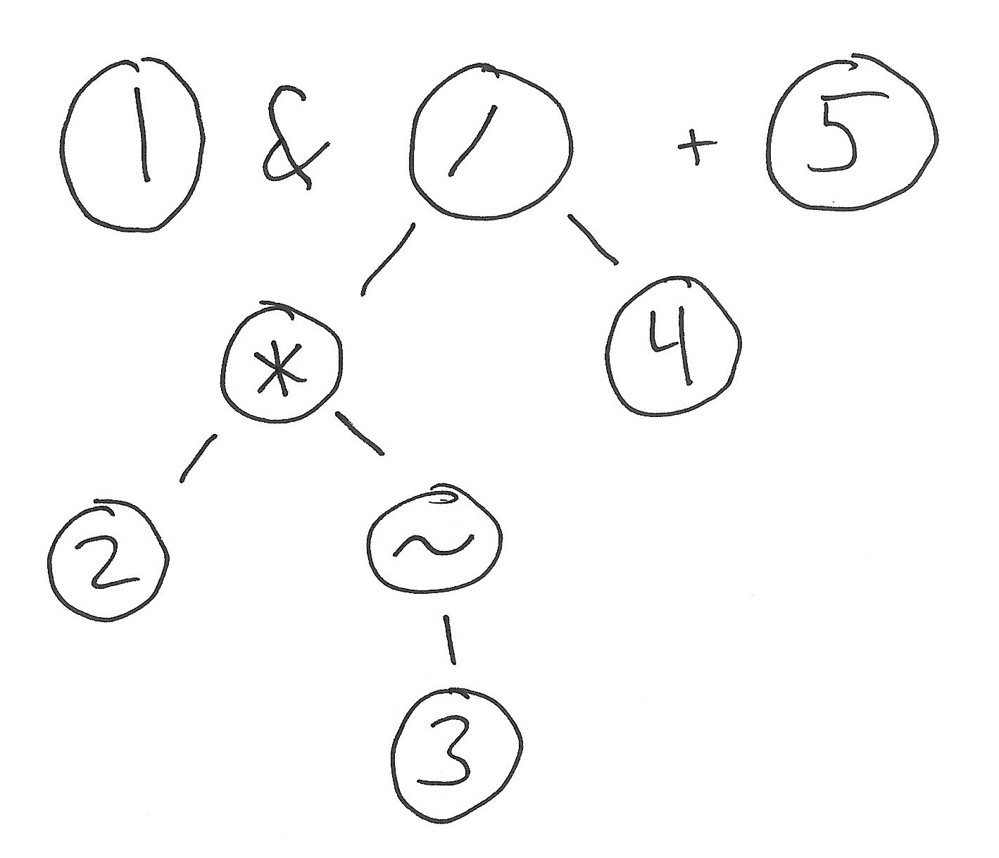
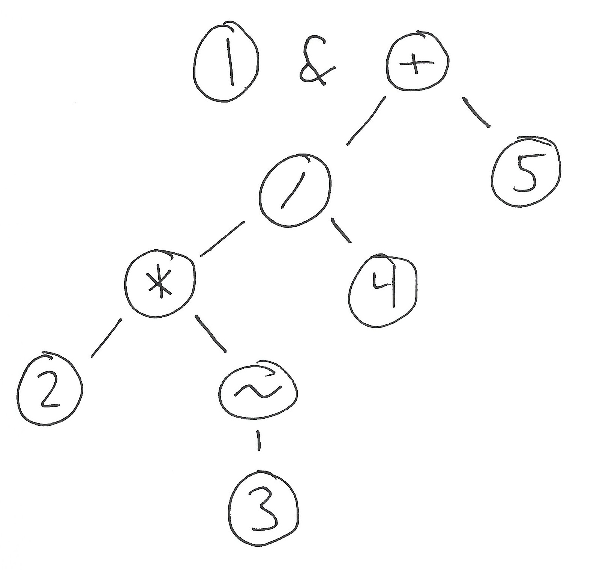
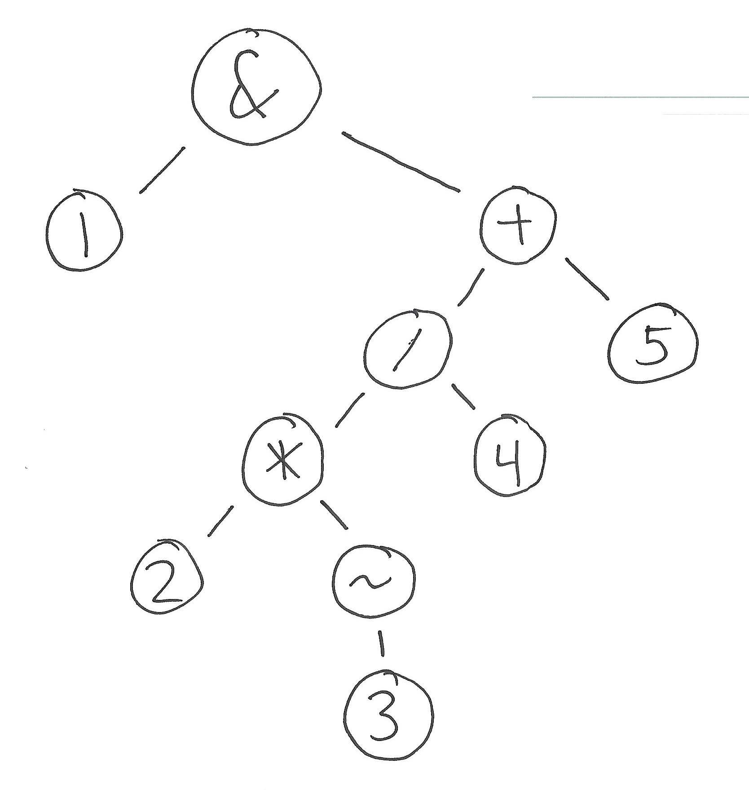

I had the following problem posed during an interview yesterday:
Write a calculator program that evaluates integer arithmetic expressions in infix form, using the normal conventions for operator precedence and associativity.
Of course, the crux of the problem is parsing the order of operations correctly. I made an attempt at a Pratt parser, which was a poor choice for a 45-minute interview. Pratt parsing involves some finicky mutual recursion, and I ran out of time long before getting to a working solution. At the end of the interview, my interviewer offered a simpler solution. I'd never seen the technique before. It seems substantially easier to get right than many of the common expression parsing techniques (Pratt parsing, precedence climbing, shunting yard, etc).
The key idea is to split parsing into a separate pass for each level of precedence. Pratt parsing, on the other hand, does everything in one pass. (Parsing in a single pass is probably faster, if you have really big expressions, for data locality reasons. However, in my experience, parsing is rarely the bottleneck anyway.) For each level of precedence, starting with the most tightly binding operations, we run over our sequence of tokens. Whenever we see an operation with matching precedence, we fold the relevant tokens in place, into an expression tree. In other words, we mutate the initially flat list of tokens into a tree, giving it more structure with each pass. Let me explain with some pictures...
Consider the C expression 1 & 2 * ~3 / 4 + 5. In C, ~ is bitwise negation, and & is bitwise and. The relevant operations are defined to have precedence in descending order (from most tightly binding to least):
~
* /
+ -
&Every binary operation here is left-associative, which makes the task a little easier. Multiplication/division and addition/subtraction have equal precedence -- in those cases we fall back to left associativity.
Here's our initial flat list of tokens:

First, we make a pass turning all literals into tree nodes.

Then, a pass for each precedence level. In this case, that's unary negation first.

Then, a pass for multiplication and division. We go from left to right, dictated by the left associativity of multiplication and division, so we see the multiplication first:

Then the division:

After the pass for addition/subtraction:

And after the final pass:

I think that was pretty straightforward! This will be my default approach to expression parsing now. I have a toy implementation available here.